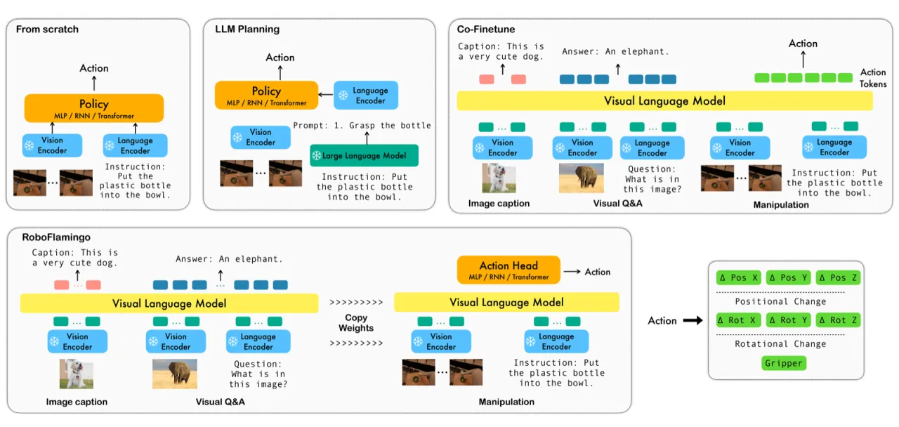
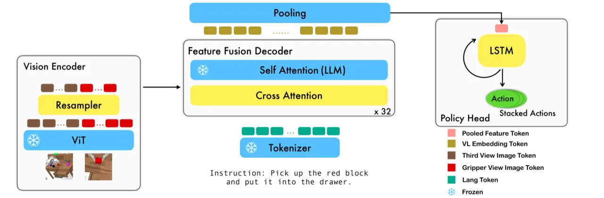
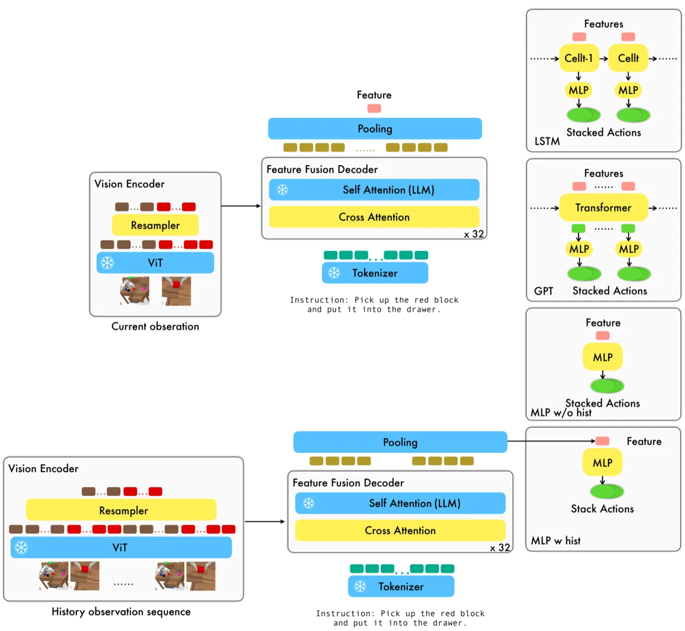
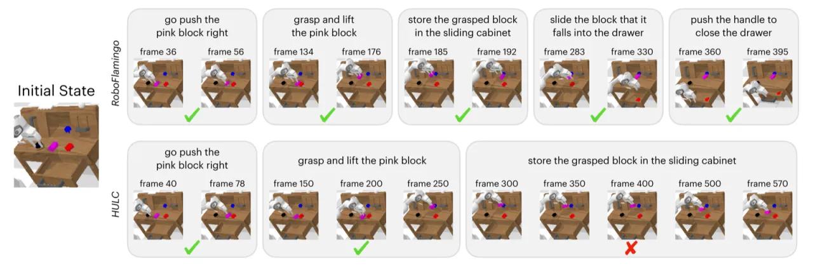

RoboFlamingo 在开源视觉-语言模型 OpenFlamingo 之上，通过解耦感知与决策、添加轻量 policy head，仅用语言标注的机器人演示数据进行模仿学习微调，便在 CALVIN 长视野操作基准上以 Avg Len 4.09 的成绩大幅超越此前最优方法（HULC，3.06），同时支持单卡 GPU 训练与推理。
视觉-语言大模型（VLM）已展现出强大的多模态理解能力，但将其直接用于机器人低层控制仍面临三大挑战：① VLM 在静态图像-文本对上预训练，难以处理视频时序观测；② VLM 输出语言 token，而机器人需要连续动作信号；③ 现有高性能方案（如 RT-2）依赖私有模型与海量数据，无法被普通研究者复用。本文提出 RoboFlamingo，探索一种低成本、开源、可单卡运行的 VLM 机器人操作方案。
"We seek a straightforward way of making use of existing vision-language models (VLMs) with simple fine-tuning on robotics data. ... RoboFlamingo can be an effective and competitive alternative to adapt VLMs to robot control."

RoboFlamingo 的核心设计是感知与决策解耦：以 OpenFlamingo 作为视觉-语言主干（perception），负责在每一决策步对当前图像观测与语言指令进行单步理解；再附加一个轻量 policy head（decision-making），对历史特征进行建模并输出机器人动作。整个框架仅微调 resampler、gated cross-attention 模块与 policy head，其余参数冻结。

视觉编码器由 ViT 和 perceiver resampler 组成：ViT 将双视角图像编码为视觉 token 序列，resampler 通过可学习查询向量将 token 数从 N 压缩到 Nr，大幅降低后续计算量。特征融合解码器含 L 层交叉注意力（cross-attention）层与冻结 LLM（LLaMA / GPT-Neox / MPT）层：LLM 层参数全程冻结，仅微调 cross-attention 与 resampler 参数。每层解码器输出为视觉-语言联合嵌入，通过带可学习门控参数 α 的 gated cross-attention 控制视觉信息混入比例，保证训练稳定性。
论文测试了四种 policy head 变体：MLP w/o hist（仅当前帧）、MLP w hist（将历史帧送入视觉编码器）、GPT（显式 token 序列）和 LSTM（隐式记忆）。消融实验表明 GPT 与 LSTM 性能相近，最终选择 LSTM 作为默认配置（简洁高效）。以 LSTM 为例，policy head 对 XtL 进行 max-pooling 聚合后输入 LSTM，并通过 MLP 分别预测末端位姿增量（MSE 损失回归）与夹爪状态（BCE 分类损失）。

实验基准为 CALVIN（Composing Actions from Language and Vision）：包含 34 个操作任务，评估 1000 条指令链，每条链要求机器人连续完成最多 5 步语言指令，仅当前任务成功才进入下一步。训练数据为带语言标注的演示（仅 Lang 分割，约 1% 全量数据）。主要对比基线：MCIL、HULC、RT-1。
| 方法 | 训练数据 | 步骤1 | 步骤2 | 步骤3 | 步骤4 | 步骤5 | Avg Len |
|---|---|---|---|---|---|---|---|
| MCIL | ABCD (Full) | 0.373 | 0.027 | 0.002 | 0.000 | 0.000 | 0.40 |
| HULC | ABCD (Full) | 0.889 | 0.733 | 0.587 | 0.475 | 0.383 | 3.06 |
| HULC | ABCD (Lang) | 0.892 | 0.701 | 0.548 | 0.420 | 0.335 | 2.90 |
| RT-1 | ABCD (Lang) | 0.844 | 0.617 | 0.438 | 0.323 | 0.227 | 2.45 |
| RoboFlamingo (Ours) | ABCD (Lang) | 0.964 | 0.896 | 0.824 | 0.740 | 0.660 | 4.09 |
| 方法 | 训练数据 | 步骤1 | 步骤2 | 步骤3 | 步骤4 | 步骤5 | Avg Len |
|---|---|---|---|---|---|---|---|
| HULC | ABC (Full) | 0.418 | 0.165 | 0.057 | 0.019 | 0.011 | 0.67 |
| RT-1 | ABC (Lang) | 0.533 | 0.222 | 0.094 | 0.038 | 0.013 | 0.90 |
| RoboFlamingo (Ours) | ABC (Lang) | 0.824 | 0.619 | 0.466 | 0.331 | 0.235 | 2.48 |
| Backbone | LLM 架构 | 总参数 | 指令微调 | COCO CIDEr (4-shot) | VQAv2 Acc (4-shot) | Best Avg Len | Mean Avg Len |
|---|---|---|---|---|---|---|---|
| M-3B | MPT | 3B | 否 | 77.3 | 45.8 | 3.94 | 3.81 |
| M-3B-IFT | MPT | 3B | 是 | 82.7 | 45.7 | 4.09 | 4.02 |
| G-4B | GPT-Neox | 4B | 否 | 81.8 | 49.0 | 3.67 | 3.53 |
| G-4B-IFT | GPT-Neox | 4B | 是 | 85.8 | 49.0 | 3.79 | 3.72 |
| L-9B | LLaMA | 9B | 否 | 74.3 | 44.0 | 2.79 | 2.71 |
| M-9B | MPT | 9B | 否 | 89.0 | 54.8 | 3.97 | 3.87 |

消融实验主要揭示以下结论：
"Due to the lack of real-robot data, this paper does not deploy on real-world robotics." 所有实验均在 CALVIN 仿真环境中进行。作者也指出，近期大规模真实机器人数据（如 Open X-Embodiment）的出现有望解决这一问题。
实验显示，在 enriched instructions（同义替换）设置下，RoboFlamingo 后续任务成功率的相对下降比 HULC 更明显。论文推断这是因为 RoboFlamingo 直接以 word token 作为输入，对同义表述更敏感；冻结 embedding 层（freeze-emb）可部分缓解，但整体语言泛化与未微调的 VLM 相比仍有差距。
直接对已训练模型执行 open-loop control（预测动作序列而不每步重新推理）会导致性能明显下降；需要用跳步演示数据（jump step demonstration）重新训练才能恢复性能，增加了部署灵活性的使用门槛。